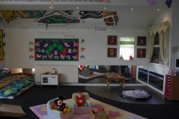

Architect Designed
{kind=link}
Seren Fach Nursery offers age appropriate rooms equipped with quality furniture and equipment. Each room has been imaginatively designed and decorated to provide an environment that keeps the children stimulated, interested and contented.
Opening hours
The nursery is open from 8am – 6pm, Monday to Friday excluding public and Bank holidays.
Half-time sessions are 8 am – 1 pm, and 1 pm – 6 pm :-
| Mon | Tues | Weds | Thur | Fri | |
|---|---|---|---|---|---|
| 8 am | 8 am | 8 am | 8 am | 8 am | |
| half-time session: | 1 pm | 1 pm | 1 pm | 1 pm | 1 pm |
| 6 pm | 6 pm | 6 pm | 6 pm | 6 pm |
Baby Room 6 weeks to approx. one year
Our Baby Room reflects a home from home environment to provide babies with comforting and reassuring home routines. A key worker will be assigned to your child and will work closely with you so as to get to know your babies routines and needs. For hygiene reasons we insist that everyone who enters the baby room covers their shoes with protective shoe guards.
Toddler Room 2-3 years
{kind=link}
During their time in the toddler room, children are introduced to a more structured day, helping them to achieve independence, knowledge and confidence in their abilities. Our focus moves to developing a range of life, social and self help skills, to develop their own unique personalities.
Pre-school Room 3-5 years
In this area the children will work to planned termly topics to emphasise the early learning goal. Children’s knowledge is enhanced through purposeful play and children are introduced to a wide variety of learning opportunities.
Outdoor Play
Seren Fach is set in an idyllic location surrounded by open fields well away from busy roads and pollution. Our outdoor play areas are specifically designed for each age group with the added advantage of a covered all weather play area to allow outdoor play as often as possible. Nursery educator Margaret McMillan said “The best classroom and the widest cupboard is roofed only by the sky”, maintaining that children need outdoor space as much as food and air.
{kind=link}
Multi-Purpose Communial Play Area
Children make regular use of this area for activities such as music and movement, parachute games, large scale creative projects and dance and drama. In this area your child will have the benefit of communicating with children of different ages within the nursery, this is essentially nice for brothers/sisters who attend, as they meet up throughout the day.
We believe this to be a fantastic resource, which provides opportunity for adult led activity supporting the ‘six ‘ areas of learning.